Zennの「JavaScript」のフィード
フィード
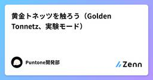
黄金トネッツを触ろう（Golden Tonnetz、実験モード）
Zennの「JavaScript」のフィード
黄金トネッツとはPuntone の発音モードのひとつ、黄金トネッツ（Golden Tonnetz）を掘り下げる記事です。全モードの一覧や基本操作は「Puntone 操作ガイド」、通常の（三角格子の）トネッツについては「トネッツで演奏しよう」を参照してください。黄金トネッツは、東京大学の今井悠介氏の論文 Golden Tonnetz（arXiv:2509.21428） にヒントを得たモードです。論文では、正五角形の対角線が作る五芒星、そして五芒星が含む黄金比を持つ三角形を使って、音楽理論でおなじみのトネッツ（音の格子図）を拡張しています。Puntoneではこの黄金トネッツを実際に演...
8時間前
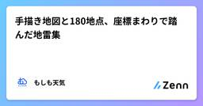
手描き地図と180地点、座標まわりで踏んだ地雷集
Zennの「JavaScript」のフィード
「もしも天気」の日本タブには、全国180地点のデータを1枚の地図に色分けして表示する機能がある。地図はGISデータではなく、アプリの他の画面と絵柄を揃えた手描き風のイラストで、そのぶん座標まわりで独特のバグを何度も踏んだ。まとめて記録しておく。 手描きの地図を、緯度経度に校正するイラストである以上、緯度経度から単純な直線変換で画面上の位置を求めることはできない。岬の先端・半島・離島・湾の奥や両岸など、地図上で位置が確実に分かる地形を約20〜30点選んで基準点とし、その基準点の「イラスト上の位置」と「実際の緯度経度」の対応から、薄板スプライン(thin-plate spline)と...
12時間前

192件のコンテンツ削除を自動化した（AIに生成してもらったJavaScriptでブラウザ操作の自動化を行った）
Zennの「JavaScript」のフィード
ノートブックの数が上限に達したお試しキャンペーンを行っていたGoogle AI Plus（400GB）を2026年9月16日に解約した。Google AI Plusの中のGemini Notebook in Plusを解約したことになったので、Gemini Notebookのノートブック数が上限に達した。 無料プランのノートブックの上限数無料プラン（Gemini Notebook Standard）の場合のノートブックの上限数は、100。https://support.google.com/gemininotebook/answer/16213268?sjid=126...
12時間前
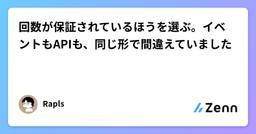
回数が保証されているほうを選ぶ。イベントもAPIも、同じ形で間違えていました
Zennの「JavaScript」のフィード
確定処理は input ではなく compositionend に置く。この1行を書き換えるのに、半日かかりました。直したあとで気づいたのは、同じ形の間違いを、まったく別の場所で3回していることでした。共通していたのは、回数が保証されていないほうを合図に選んでいたことです。 何が起きたか日本語入力の確定を検知する処理でした。input イベントで拾っていたら、Safari だけ送信が二重に走ります。6つの環境で測り直したら、こうなりました。環境確定時の input の回数Chrome (mac)1回Chrome (win)1回Safari (...
13時間前
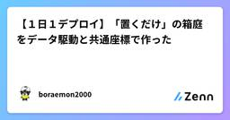
【１日１デプロイ】「置くだけ」の箱庭をデータ駆動と共通座標で作った
Zennの「JavaScript」のフィード
今回作ったもの「１日１デプロイ」の新作として、ブラウザで遊べる箱庭 ポケットガーデン を作りました。丸い浮島へ、花、木、池、ベンチ、ランプ、屋台のステッカーを置いて、自分だけの庭をつくります。制限時間もゲームオーバーもありません。案内役は庭番のブラピさんです。今回いちばん大切にしたのは、説明を読んでから始めるのではなく、置いた瞬間に景色が変わることでした。最初の花を置くと花びらが弾け、ブラピさんが反応します。花と池なら蝶、木とベンチなら小鳥というように、組み合わせから庭の出来事も生まれます。▶ ポケットガーデンを遊ぶ 遊び方花、木、池、ベンチ、ランプ、屋台から道具...
13時間前

ページ内リンクが別ページへ飛ぶ — 犯人は自分が書いていない base タグだった
Zennの「JavaScript」のフィード
社内向けのHTMLレポート一覧ページに、見出しへ飛ぶ目次リンクを足した。手元でHTMLを開くと問題なく動く。ところが実際の閲覧経路で開くと、リンクを押した瞬間にエラー画面へ飛ばされた。原因は自分が書いていない <base href> タグだった。同じ踏み方をしないように、仕組みと確認手順、直し方を残しておく。 症状の見分け方ページ内リンクは普通こう書く。<a href="#install">インストール</a>...<h2 id="install">インストール</h2>期待する動きは「同じページ内の見出しまでス...
15時間前
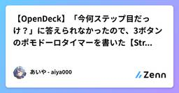
【OpenDeck】「今何ステップ目だっけ？」に答えられなかったので、3ボタンのポモドーロタイマーを書いた【Stream Deck】
Zennの「JavaScript」のフィード
aiya000/opendeck-plugin-organized-pomodoro-timer - GitHub はじめにポモドーロタイマーを使っていると、僕は毎回これになります。「あと何分だっけ」「今、何ステップ目だっけ」「今日、何サイクル回したっけ」1つ目は、だいたいどのタイマーでも答えてくれます。問題は2つ目と3つ目です。「25分働いて5分休む」を3回やったら長い休憩、という運用をしていると、今が何ステップ目かで、次に来る休憩の長さが変わります。5分だと思って気を抜いたら30分の長い休憩だった、あるいはその逆、というのを何度かやりました。スマホのア...
21時間前
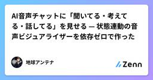
AI音声チャットに「聞いてる・考えてる・話してる」を見せる — 状態連動の音声ビジュアライザーを依存ゼロで作った
Zennの「JavaScript」のフィード
AI音声チャットを作っていて、一番気になったのは「AIが今なにをしているのか」が画面から分からないことでした。マイクは拾えているのか、考えているのか、もう話し始めているのか。テキストなら「…」で済むところが、音声だと無音の数秒が長い。そこで、会話の状態（idle / listening / thinking / speaking）に合わせて自動で表情を変える光のオーブを作りました。依存ゼロ・1ファイル・MITで公開しています。デモ: https://tamasizume.github.io/earth-antenna-mandala-orb/リポジトリ: https://git...
1日前
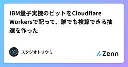
IBM量子実機のビットをCloudflare Workersで配って、誰でも検算できる抽選を作った
Zennの「JavaScript」のフィード
抽選の「公平さ」は、主催者が「公平です」と言っても証明にならない。乱数の種を持っている人には、引く前から結果が分かってしまうからだ。そこで、種の一部を IBM の量子コンピュータ実機の測定結果にして、計算の残り全部を公開するという形にした。出来上がったものは https://toriumis.com/draw/ で動いていて、検算コードは https://toriumis.com/draw/verify.js に置いてある。この記事は、その設計と、Cloudflare Workers で IBM Quantum の REST API を叩いて乱数を仕入れる部分の実装メモ。 先...
1日前
無料でVPN/Proxy/Torを検知するライブラリを作った話 1
1
Zennの「JavaScript」のフィード
きっかけウェブサービスを作っているとVPN/Proxy/Tor (以下匿名IPと表記)をはじきたくなる時ってありますよね?私もまさにその一人です。ただ匿名IPをはじくとなると以下のような方法がメインになります。外部サービス(IPInfo IP-API etc...)を使うMaxMind社のGeoIP® Anonymous IP database(有料)を使う小規模サービスの場合は方法1で事足りますが大規模サービスになると例えcacheを実装したとしてもAPI料金や帯域の面で厳しい部分が出てきます。かといって方法2はコスト的にも手続き的にも手軽にできる...
1日前
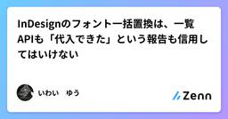
InDesignのフォント一括置換は、一覧APIも「代入できた」という報告も信用してはいけない
Zennの「JavaScript」のフィード
結論InDesignで使用フォントを一括変換するスクリプトを組むとき、次の2つを信用すると事故る。doc.fonts が返す「使用フォント一覧」 — 壊れたフォント参照を、実在する別のスタイルにすり替えて報告することがある代入処理が例外を出さずに終わったという事実 — 代入が成功したことを意味しない筆者は多言語組版の案件で、この2つを信用したまま「変換完了」と報告し、あとから「フォントが当たっていない箇所が多々あります」と指摘された。原因は1つではなく、性質の違う3つの罠が重なっていた。 何をしていたか翻訳後のテキストを流し込む工程は前段階の別工程で完了しており...
1日前
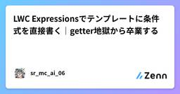
LWC Expressionsでテンプレートに条件式を直接書く｜getter地獄から卒業する
Zennの「JavaScript」のフィード
はじめに最近Salesforceで「LWC Expressions」って言葉を見かけるけど、なんだか難しそう、と思っていませんか。正直、私も最初にこの機能のサンプルコードを見たときは「これ、テンプレートに直接書いちゃっていいの?」と二度見しました。でも実際に手を動かしてみると、拍子抜けするくらいシンプルでした。LWCのコンポーネントを作っていると、ちょっとした表示の出し分けのためだけにgetterを量産してしまうこと、ありますよね。名前を連結するだけ、金額が0より大きいか確認するだけ、そんな小さな処理のために毎回JSファイルを開くのは正直面倒です。「Complex Templ...
1日前
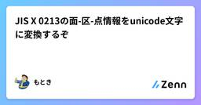
JIS X 0213の面-区-点情報をunicode文字に変換するぞ
Zennの「JavaScript」のフィード
マークダウン文書エディタを作っているPergamum(ペルガモン)というOSSテキストエディタをコツコツとAIに作らせている。それでテストデータで世話になった青空文庫も編集できるようにならないか、と考えた。ただ、青空文庫はShift-JIS(CP932)エンコーディングで、収録できない文字は注釈として表現されている。具体的には面-区-点情報として。 面-区-点テーブルを変換すりゃいいんだろう？そう思っていた時期が俺にもありました。ただ莫大なデータ量のテーブルをたちどころに変換する都合のいいテーブルが無い。そこでAIに相談しながら色々探してみたけれども、国立国語研究所（NINJ...
1日前
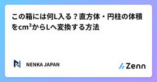
この箱には何L入る？直方体・円柱の体積をcm³からLへ変換する方法
Zennの「JavaScript」のフィード
収納ケース、水槽、タンク、容器などを見ていると、幅40cm奥行30cm高さ25cmのように寸法は書いてあるのに、「結局、何リットル入るの？」と思うことがあります。体積そのものは簡単に計算できますが、cm³m³LmLと単位が変わると、少し分かりにくくなります。今回は、直方体立方体円柱を例に、体積の求め方とリットルへの変換を整理します。 まず覚えたい「1000cm³ = 1L」容器の体積を考えるとき、一番覚えておきたいのが、1000cm³ = 1Lです。さらに、1cm³ = 1mLなので、1000cm³= 1000mL= 1Lとな...
1日前
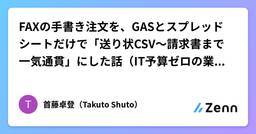
FAXの手書き注文を、GASとスプレッドシートだけで「送り状CSV〜請求書まで一気通貫」にした話（IT予算ゼロの業務効率化）
Zennの「JavaScript」のフィード
この記事について食品・ホスピタリティ系の会社で、EC・Webマーケティングと社内システム開発をひとりで兼任しています。専門の開発部署もIT予算もない環境で、**「現場の手作業を、動く仕組みにして無くす」**という業務効率化をずっとやってきました。その中核が、ギフト受注の業務システム（社内では GiftDesk と呼んでいます）です。FAX・手書き注文書・自社EC（Welcart）などバラバラな入口から来る注文を1つのWebアプリに集約し、「ヤマトB2クラウド用CSV → 出荷指示書 → 熨斗 → 送り状 → 請求書 → 月次集計」までをボタン操作で一気通貫にしました。使ったのは ...
2日前
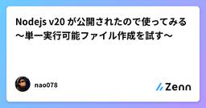
Nodejs v20 が公開されたので使ってみる～単一実行可能ファイル作成を試す～
Zennの「JavaScript」のフィード
この記事は、2023-04-21にはてなブログへ投稿した同名の記事をZenn向けに転載したものです。内容は元記事の執筆時点のものです。 主な更新箇所下記6点(詳細はリンクを参照)Experimental Permission ModelA synchronous import.meta.resolveStable Test RunnerV8 JavaScript engine updated to 11.3Single Executable AppsAda to 2.0あとはWindowsもARM版がリリースされてるとのことhttps://openjsf.o...
2日前
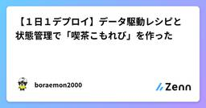
【１日１デプロイ】データ駆動レシピと状態管理で「喫茶こもれび」を作った
Zennの「JavaScript」のフィード
今回作ったもの「１日１デプロイ」の新作として、ブラウザで遊べる接客ゲーム 喫茶こもれび を作りました。ブラピさんが店主を務める小さな喫茶店で、伝票どおりに材料を選び、抽出の針が飲みごろへ入った瞬間に一杯を仕上げます。朝・昼・夕の3シフトを営業し、評判を守りながら売上とPERFECTの連続を伸ばすゲームです。今回は画面の手触りも変えました。焦げ茶、深い緑、柿色、クリームを中心に、網点やわずかな印刷ずれを重ねたリソグラフ調です。案内役のブラピさんは白いカードへ入れず、透過画像の店主として店内へ立ってもらいました。▶ 喫茶こもれびを遊ぶ 遊び方「開店する」を押す伝票に...
2日前
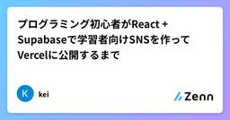
プログラミング初心者がReact + Supabaseで学習者向けSNSを作ってVercelに公開するまで
Zennの「JavaScript」のフィード
はじめにプログラミング学習の一環として、StudyCodeというWebアプリを作りました。StudyCodeは、学んだプログラミング用語と自分なりの説明を投稿できる、プログラミング学習者向けのSNSです。公開URL：https://study-code-seven.vercel.appGitHub：https://github.com/s23s232h-design/StudyCodeこの記事では、StudyCodeを開発する中で実装した機能や、特に勉強になったことを振り返ります。また、開発するにあたって、ChatGPT、Codexをめちゃくちゃ使いました。AIってす...
2日前

X・Threads・Instagram・noteの文字数ルールを比較して、簡易カウントロジックを書いてみた
Zennの「JavaScript」のフィード
はじめにSNSやnoteに投稿するとき、「あと何文字まで書けるか」を意識した経験は多いと思います。ただ、この「文字数ルール」はプラットフォームごとにかなり性質が違います。単純な文字数カウントで済むものもあれば、文字の種類によって重み付けが変わるものもあります。この記事では、X・Threads・Instagram・noteの4つについて、実際にどういうルールになっているかを整理し、実装のイメージをつかむために簡易的な文字数カウントロジックを自分で書いてみました。 4つのプラットフォームのルールを整理する X: 文字の種類によって重みが変わるXは「全ての文字を1文字として数...
2日前
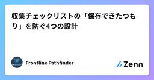
収集チェックリストの「保存できたつもり」を防ぐ4つの設計
Zennの「JavaScript」のフィード
ゲームの収集チェックリストでは、チェックを付けた瞬間よりも、翌日その記録が残っていることの方が重要です。見た目だけ更新され、保存には失敗していた場合、利用者は何を集めたかをもう一度調べることになります。アカウント登録を省いた小さなツールでも、この問題は避けて通れません。この記事では、ブラウザー内に記録を置くチェックリストを題材に、保存状態と復旧手順の設計を整理します。以下のコードは説明用の最小例であり、既存サイトの内部実装を公開したものではありません。 1. 画面の更新と保存の成功を分けるチェックボックスの色が変わっただけでは、次回も読み戻せるとは限りません。「選択中」と「保存済...
2日前